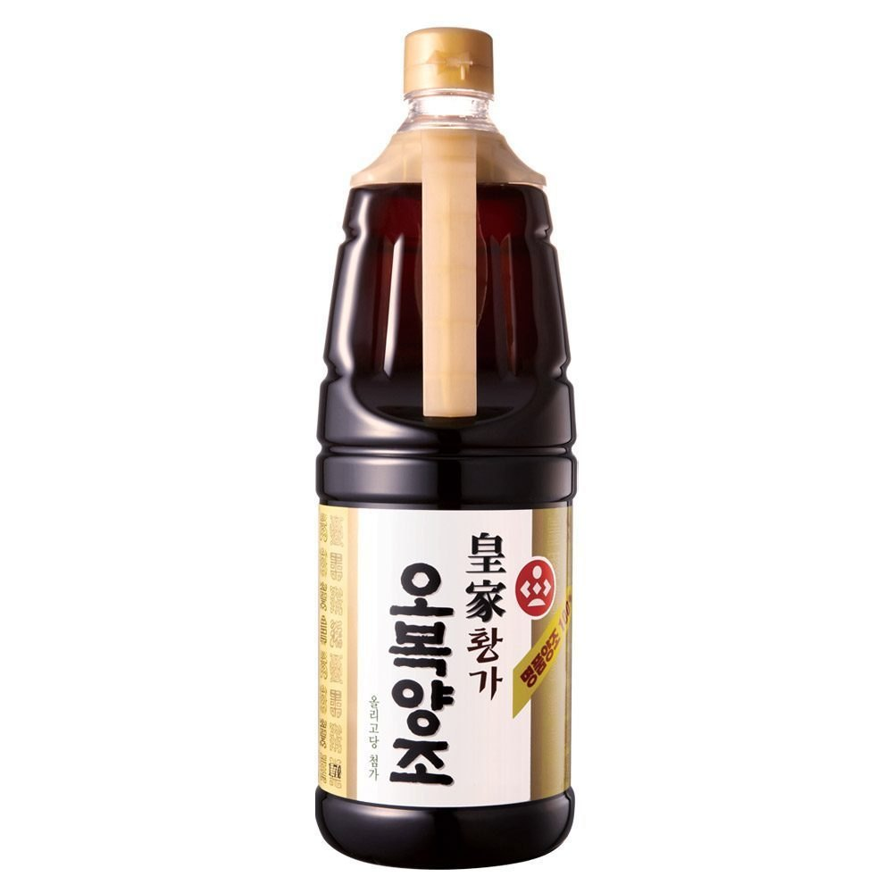
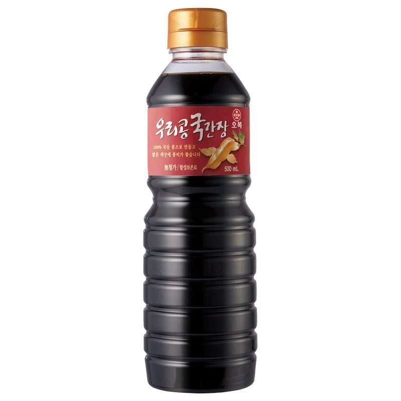
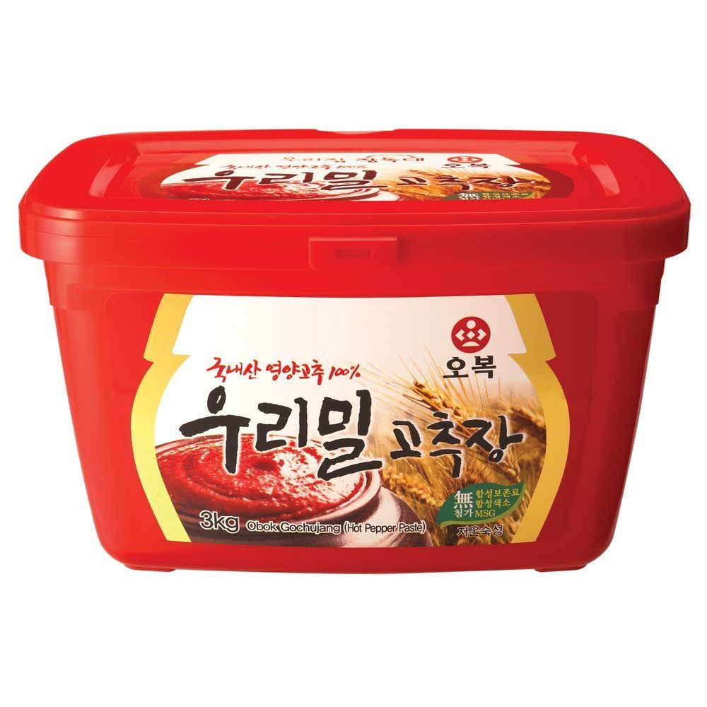
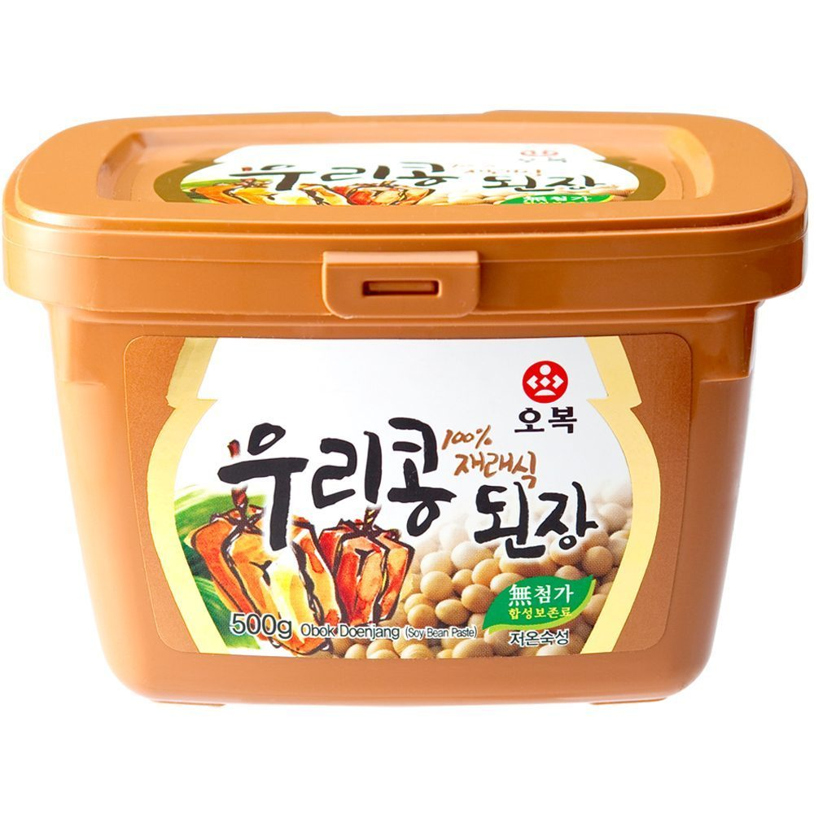
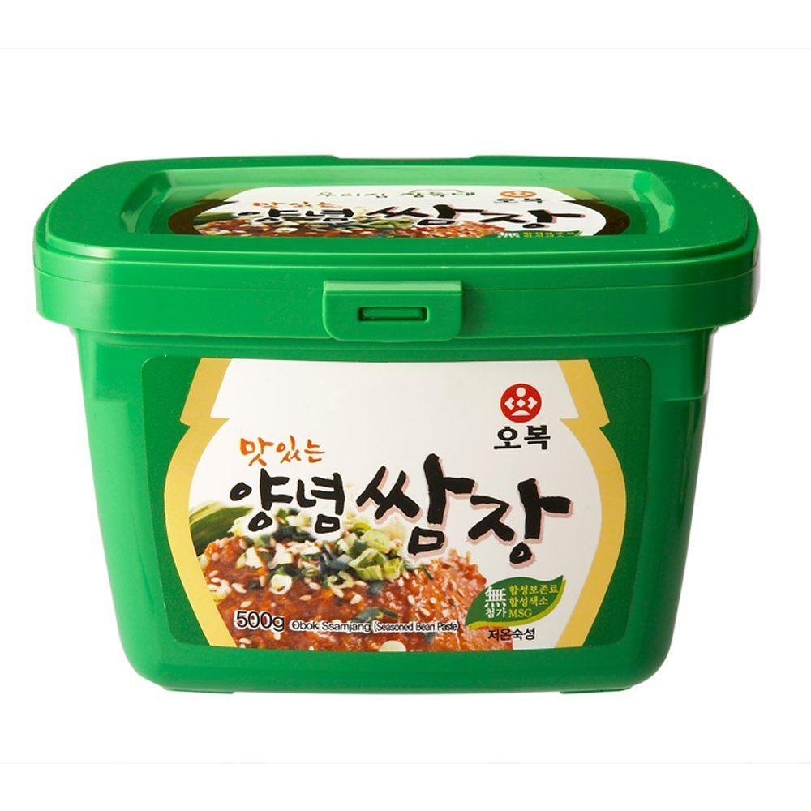
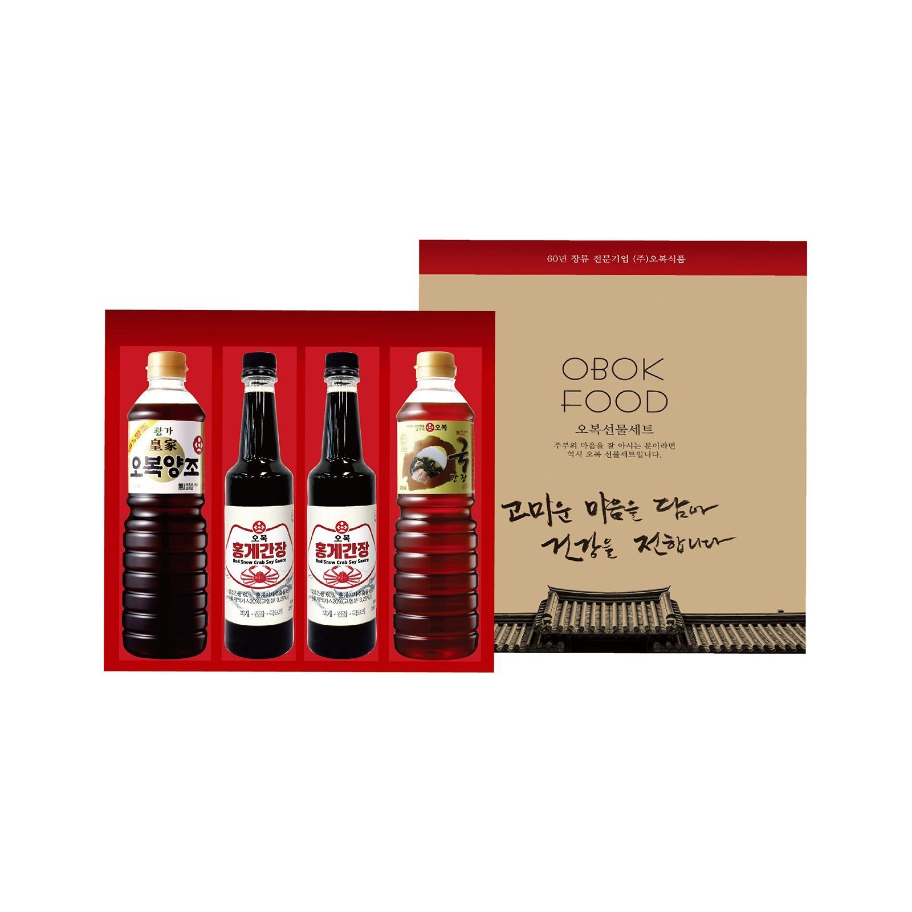
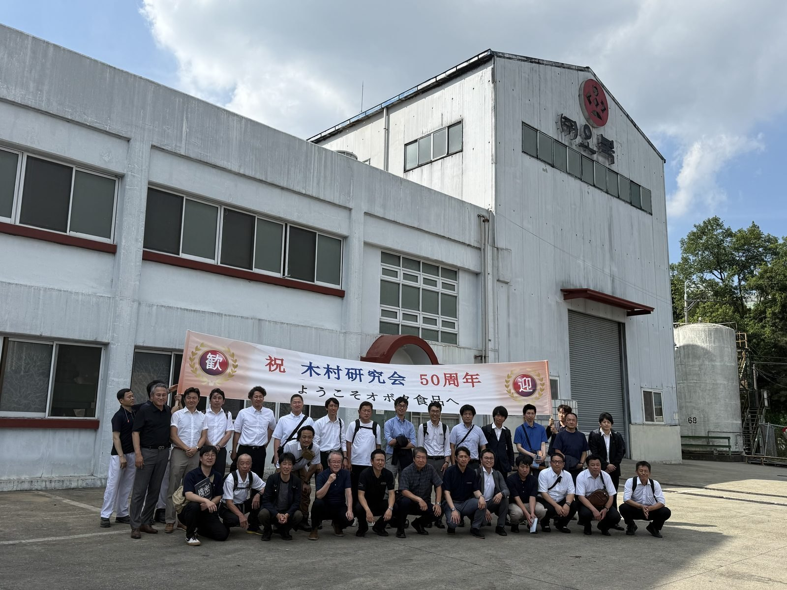
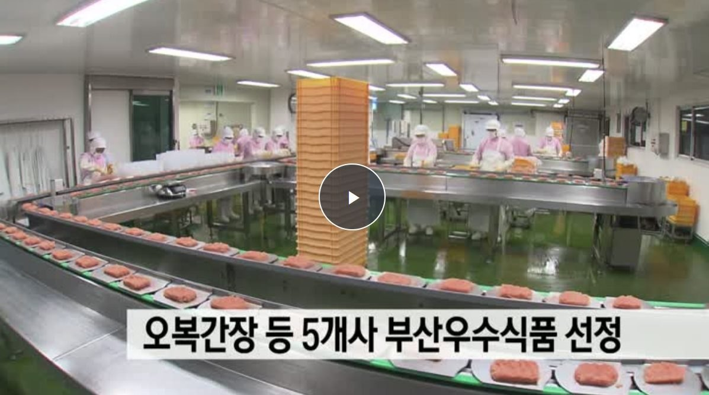
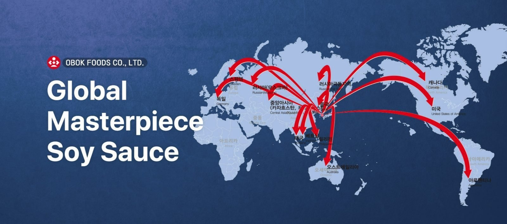

Brewed Soy Sauce
Hwangga OBOK Brewed Soy Sauce
A rich, well-balanced soy sauce for seasoning, cooking and dipping.
OBOK FOODS CO., LTD.
Premium soy sauce and traditional Korean fermented sauces, crafted with time and trusted worldwide.
ABOUT OBOK
Founded in 1952, OBOK Foods has grown with one clear purpose: to preserve the depth of Korean fermented flavor while advancing food safety and manufacturing quality.
From traditional sauces to dependable food-service products, we combine accumulated know-how, careful production and modern quality systems.
OUR FERMENTATION PHILOSOPHY
Time, patience and carefully selected ingredients create the deep, balanced flavor at the heart of Korean cuisine. OBOK brings tradition and modern food technology together to make that heritage dependable for today’s customers.
Since 1952 · Fermentation HeritageOUR PRODUCTS
Explore OBOK Foods’ representative soy sauces, traditional Korean pastes and premium gift sets.

A rich, well-balanced soy sauce for seasoning, cooking and dipping.

A clean, deep-flavored soy sauce made for soups and traditional Korean dishes.

Rich and savory Korean hot pepper paste with a balanced spicy flavor.

Traditional Korean soybean paste with a deep, wholesome fermented taste.

A savory seasoning paste ideal for Korean barbecue, vegetables and wraps.

A classic black bean paste for jajang dishes and Korean-Chinese cuisine.

A refined two-bottle selection prepared for meaningful gifts and special occasions.

A versatile four-bottle collection showcasing representative OBOK sauces.
FACTORY & FACILITIES
Headquarters and production facility in Busan, Republic of Korea.

Fermentation and production facility, shown during a technical exchange visit from Japan.
MANUFACTURING EXCELLENCE
Our teams operate structured production lines under disciplined hygiene and quality controls to deliver reliable products for domestic and overseas customers.

QUALITY & FOOD SAFETY
OBOK Foods maintains HACCP-certified systems across key fermented sauce categories.
GLOBAL EXPORT
OBOK Foods connects Korean fermented flavor with customers across international markets.

OBOK FOODS CO., LTD.
For export, OEM and business inquiries, please contact OBOK Foods.